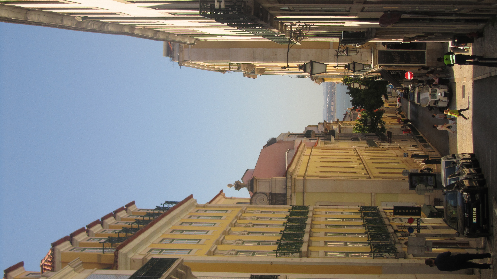
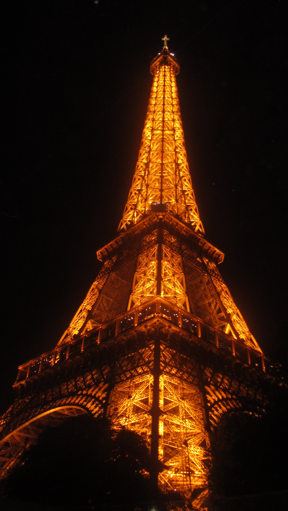
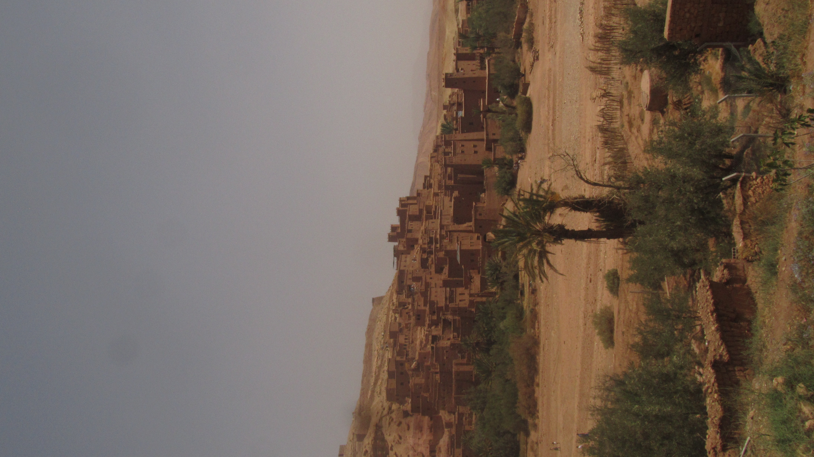
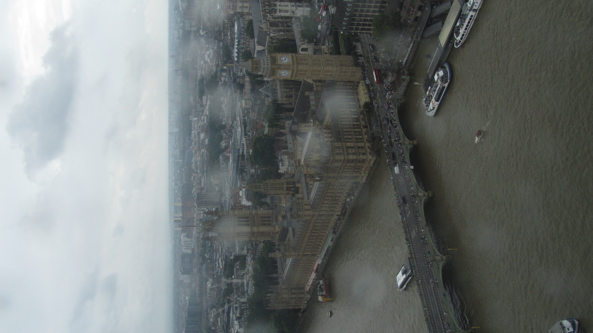

This summer, I studied abroad in Europe and had the chance to explore many new places. I got to travel and practice digital photography by capturing different cities, architecture, landscapes, and everyday moments. These photos and videos are some of my favorite memories from the trip.
Digital photography became one of my favorite creative interests because it lets me capture places in a way that feels personal and meaningful. I especially enjoyed taking photos of streets, landmarks, and scenic views because each place had such a different mood and aesthetic. Photography made me slow down and appreciate the details around me.


Paris felt very elegant and artistic, especially at night when everything was lit up. The Eiffel Tower stood out the most to me because of how detailed and structured it is, and photographing it made me focus on lighting and symmetry. I liked capturing how the city combines history with a modern, lively atmosphere.

Marrakech had a completely different vibe compared to the other cities I visited. The warm colors and desert landscape. I liked how everything blended into natural tones.

London had a more moody and calm atmosphere, especially with the rain and cloudy skies. The weather actually made the photos more interesting because it added a soft, cinematic feel. I enjoyed capturing the contrast between the historic buildings and the modern city around them.
I also took videos while traveling so I could capture movement and atmosphere in a different way.